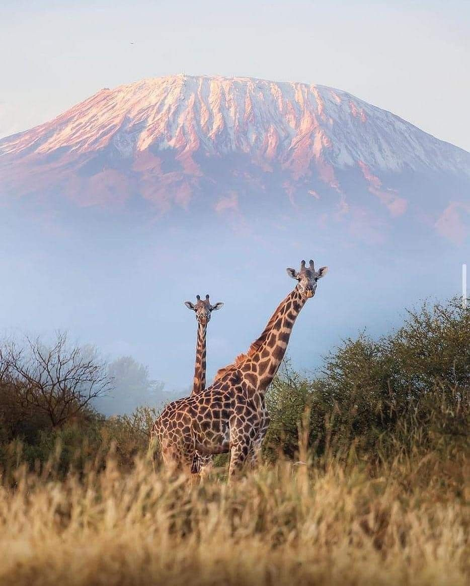
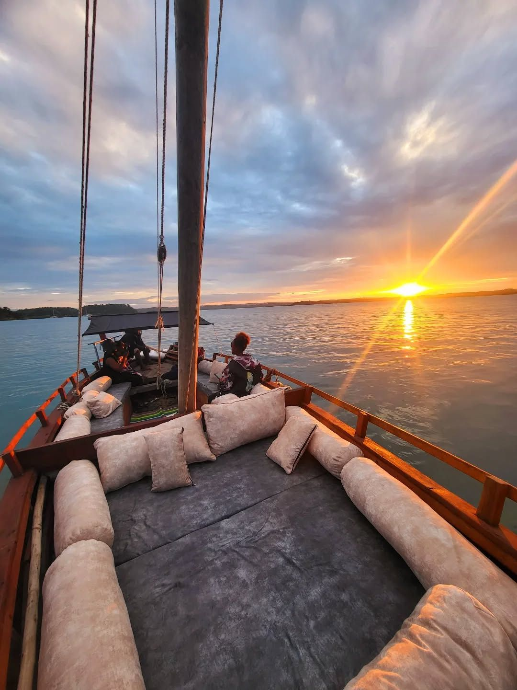

Awards & Partners

Top Safari Operator 2025
Recognized for exceptional wildlife tour experiences and customer satisfaction with Kenya's vast and beautiful wildlife and sceneries.

Community Champion
Partnered with local Maasai communities to deliver sustainable tourism and cultural support and have you get to experience kenyan culture to the fullest.

Preferred Travel Partner
Awarded for premium tour coordination and seamless guest experiences across Kenya.